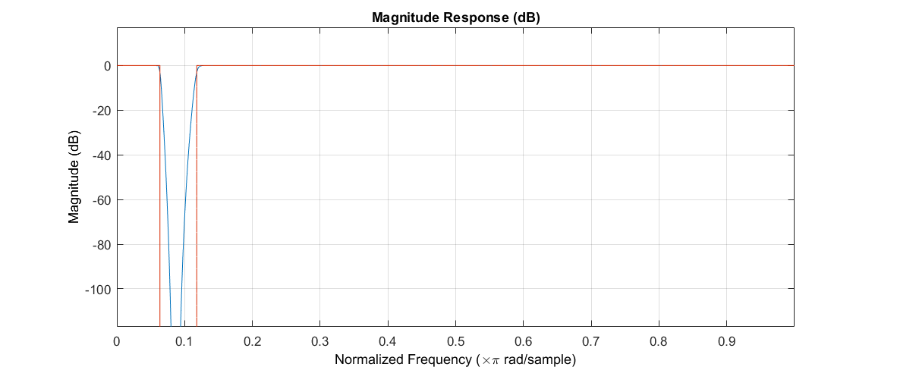
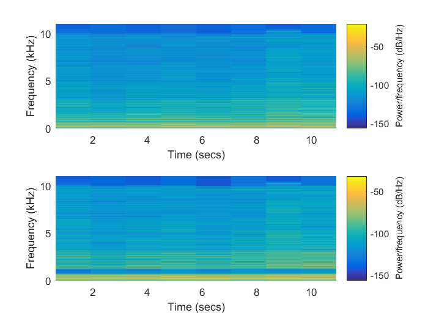

Contents
Codes for AUT-Multimedia 2016 Course
Lecture 3: Designing Filters for Audio Signals
Taught by: Nima Mahmoudi
This code is released under the GPLv3 license for non-commercial use only. For other types of license please contact me.
clear all, close all, clc;
Loading the audio signal and initializing the Player
[y, Fs] = audioread('guitar.mp3'); % The sound in this file is stereo. we want to work only with one of its % channels, so we just use a single channel. y = y(:,1)'; % we could play the original signal. % player = audioplayer(y,Fs); % playblocking(player);
Synthesizing a Sinusoid
Here we create a sinous as a noise to be added to the audio. we will use the Fs extracted from the audio signal.
% The length will be equal to actual audio. t=0:1:length(y)-1; % Our signal will be 1kHz Fi = 1000; yi = .1 * sin((2*pi*Fi/Fs)*t); yt = y + yi; player = audioplayer(yt,Fs); playblocking(player);
Filter Design
Now we have a signal with a Sinusoidal interferance added to it. We can use a Notch Filter to remove it.
% FDATool is a great graphical filter design tool that can be used for any % kind of filter. % fdatool
Load Filter
load filter.mat
fvtool(Hd)
 Filter the File
% Filtering the file using the object saved. % To see further details, check the fdatool session. yf = filter(Hd,yt); % Plot Spectrograms figure(1); subplot(2,1,1); spectrogram(yt,[],[],[],Fs,'yaxis'); subplot(2,1,2); spectrogram(yf,[],[],[],Fs,'yaxis'); % Play the results, see that noise is removed. player = audioplayer(yf,Fs); playblocking(player);